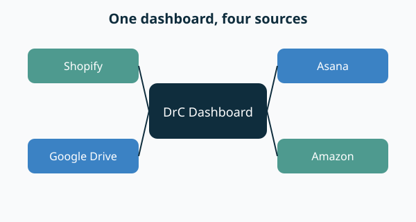

Integrations
Connected to the tools we already use
The dashboard does not replace the tools the team uses every day. It reads from them, so each fact lives in one place and is shown everywhere it is needed.

What each tool provides
- Shopify – store orders, customers and subscription data.
- Amazon – marketplace orders and shipping status.
- Asana – tasks for late orders and daily work.
- Google Drive – shared reports and product documents.
Learn more
The store side of the business runs on Shopify (opens in a new tab). Its order and customer data is the first connection planned for a live version.
This class project is a static website. Real connections need a server to keep passwords and keys safe, so they are described here rather than built.